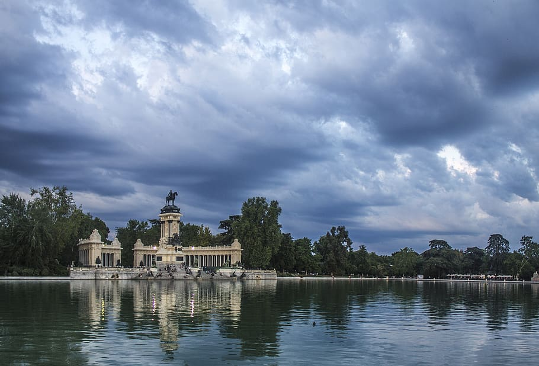

Turizm
Madrid Dünya Turizm Örgütü (UNWTO)'nun merkezidir.
Şehir 2018'de 10.21 milyon turist aldı. Bu turistlerin %53.3 ü yabancı %46.7 si ise yerli turisttir. Uluslararası turistlerde en büyük pay ABD'nindir. Onu sırasıyla İtalya, Fransa, Birleşik Krallık ve Almanya izlemektedir.
En çok ziyaret edilen müze, 2018 yılında toplam 3,8 milyon ziyaretçi ile Kraliçe Sofia Ulusal Sanat Müzesi oldu. Onu 2.8 milyon turistle Prado Müzesi izledi. Ayrıca şehirde diğer gezilecek yerler de şu şekildedir:
- Retiro Parkı
- Santiago Bernabéu Stadyumu
- Madrid Kraliyet Sarayı
- Plaza Mayor Madrid
- Puerta del Sol